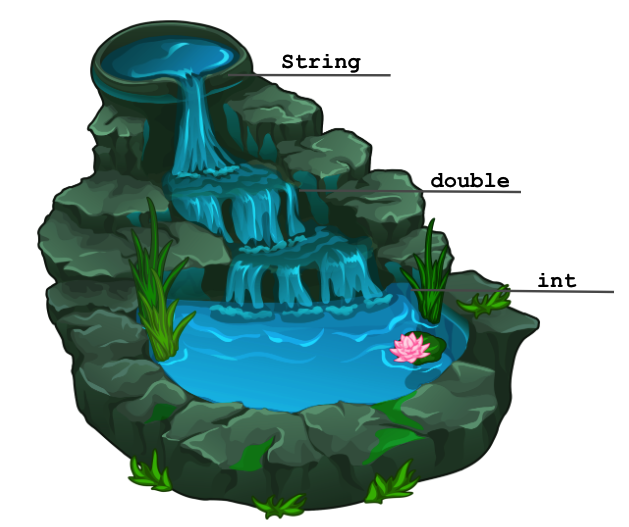
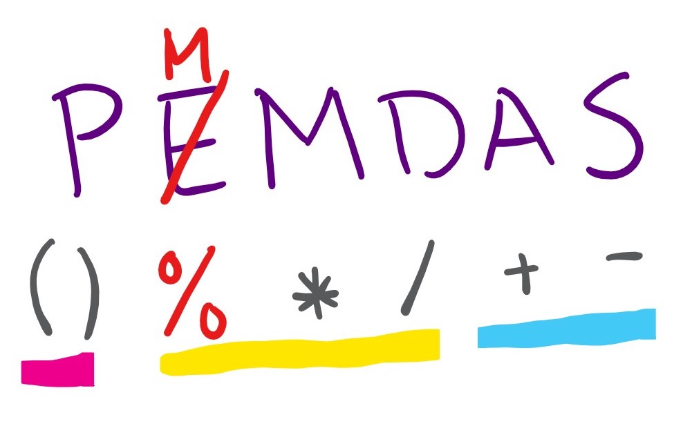

Expressions#
Note
Above, you’ll see there’s a video titled Expressions [Video Walkthrough]. The video and the reading both have the same information! You’re not required to go through both the video and the reading, as the video just walks through the reading to help contextualize it!
🔢 Expressions#
By now, you’ve worked a bit with data types such as int, double, String, and boolean. In this lesson, we’ll learn about how else we can use these values!
Specifically, now that we can have notions of 5 and 3.14 in our programs, something you may be inclined to do is write a simple mathematical expression such as 5 + 3.14. Good news! Java knows about math, and works the way you might expect! (For the most part… more to come on this a bit further down the page.)
➕ Operators#
The basic mathematical operators for addition (using +), subtraction (using -), multiplication (using *), and division (using /) are available in Java. Each of these mathematical operators are binary operators, meaning they are used to combine two values (or operands) and each operation evaluates to a new value.
Let’s take a look at a few examples! You’ll see a code snippet below with expressions inside of System.out.println statements. Each expression evaluates to a resulting value, which is then printed out using the println statements!
public class ExpressionPractice{
public static void main(String[] args) {
System.out.println(3 + 5);
System.out.println(6.9 + 1.145);
System.out.println(5 * 10);
System.out.println(18.5 / 2.5);
System.out.println(10 / 3);
}
}
Hit the “Run” button and take a look at the output. Are all of the results that are printed what you expected? Take a close look at the last line…🤔 huh? (keep reading ⬇️)
➗ Integer Division#
The basic mathematical operators work as you would expect, except for the division operator when working with two int operands. In the 10 / 3 example shown above, you may have expected to see something like 3.333, but instead we see that the result evaluates to 3. In this scenario, “int division” or “truncating division” is performed—-you can instead think of this as answering the question of “How many times does 3 fit evenly into 10?” where the answer is 3. Alternatively, you can do mathematical division and get an answer of 3.333… , then remember that in this case we truncate everything to the right of the decimal point, giving us the final answer 3.
Caution
Forgetting about integer division when working with ints is a very common source of bugs (bugs are coding errors in programs) when you’re first starting out (and frequently comes back to haunt even the most experienced programmers).
If you’re noticing some strange 0’s showing up where they shouldn’t or some of your numerical results look off, check anywhere you’re using division to make sure you’re getting the results you expect! 🐛🐞
😲 Modulo or “Mod” (%)#
Java actually provides another mathematical operator that you may not have seen before: the modulo (or “mod” for short) operator, which uses the % character. This operator’s result is what would be the remainder of an int division using the same two operands. For example, if we were to evaluate 10 % 3, we would get s which is the remainder we get when evaluating 10 / 3. Given this description, what do you expect 4 % 2’s result to be? Take a moment to think before running the code below:
public class ModuloPractice {
public static void main(String[] args) {
System.out.println(10 % 3);
System.out.println(4 % 2);
System.out.println(2 % 6);
}
}
🧵 Dealing with Strings#
So far we’ve only been talking about int and double types, but you’ve also been working with values of type String! String values aren’t able to work with the *, -, /, or % operators (if you try to use them, you will get a compiler error), but they do work with +! When dealing with String values, + denotes concatenation which is a fancy way of saying “squishing Strings together”! Try running the code below to understand how String concatenation works!
public class ConcatenationPractice {
public static void main(String[] args) {
System.out.println("Hello " + "everyone!");
System.out.println("Java i" + "s so co" + "ol");
}
}
⚙️ Relational and Logical Operators#
Relational operators allow us to check the relationship between two operands (or values). We evaluate the expression using the relational operators to see if that relationship is true or false. Some of the basic relational operators can be seen below:
| Operator | Description | Example |
|---|---|---|
== |
equal to | 3 == 9 returns false |
!= |
not equal to | 3 != 9 returns true |
> |
greater than | 10 > 5 returns true |
< |
less than | 7 < 3 returns false |
>= |
greater than or equal to | 2 <= 2 returns true |
<= |
less than or equal to | 10 <= 5 returns false |
Alongside relational operators, we also have logical operators. Just like relational operators, they evaluate some expression to either true or false. But we can use logical operators to combine two or more boolean expressions or to get the opposite value of a particular boolean expression! Check out some logical operators below:
| Operator | Syntax | Description | Example |
|---|---|---|---|
&& (logical AND) |
expression1 && expression2 |
returns true if both expressions evaluate to true |
8 > 4 && 14 != 7 |
|| (logical OR) |
expression1 || expression2 |
returns true if at least one of the expressions evaluates to true |
8 % 2 == 0 || -8 < 0 |
! (logical NOT) |
!expression |
returns true if the expression is false and vice versa |
!(8.5 < -9.716) |
🤔 Expressions Using Different Types#
We’ve notably only trying out examples where both of the operands share the same type. What do you think would happen if we tried to use these operators using values of different types in an expression? Take a moment to think about some reasonable things Java could do given this scenario before clicking “Expand” below!
Expand
Java will *convert* one of the operands to the other operand's type, then it will perform the operation! Here are how the conversions work:ints can be converted to doubles
e.g., 5.0 * 2 ➡️ 5.0 * 2.0
ints can be converted to Strings
e.g., 5 + “hello” ➡️ “5” + “hello”
doubles can be converted to Strings
e.g., “pickle” + 4.9 ➡️ “pickle” + “4.9”
You can think of these conversion rules like a waterfall: when two types are involved in an operation, the one higher up in the waterfall overtakes the one lower down!

Danger
You cannot combine values of type boolean with other types in an expression! Java will give you a compiler error if you try.
📄 Precedence (Order of Operations)#
Now that we’ve got a grasp of the basics, let’s think about some more complicated expressions. When there are multiple operators involved in an expression (like 3 * 14.5 + 6 + "hi") you have to think about precedence, or what order the parts of the expression (or subexpressions) are evaluated in. The PEMDAS order-of-operations trick that you may have learned in earlier school years applies here (with a few small tweaks) for non-boolean expressions.

**[P]**arentheses (
()) - You can use parentheses in a Java expression in the same way that you can in a mathematical expression. Any subexpression that is inside of parentheses is performed before any other part of the expression.[
EM M D]EModulo (%) - There isn’t a Java operator for “exponents” (^actually does something different), but we can instead replace this with the mod operator.Multiplication (
*)Division (
/)
[A S]
Addition (
+) - This really applies to the+operator, so both addition andStringconcatenation share this level of precedence!Subtraction (
-)
🎚 Levels of Precedence#
Notice that we’ve grouped mod, multiplication, and division together, and addition and subtraction have their own group. These groupings indicate the levels of precedence. In other words, all of the operators within a level of precedence don’t have priority over the others—in Java, when there are multiple subexpressions with the same level of precedence, they are executed from left to right.
Caution
In classical mathematics, the order of doing multiplication and division in an expression didn’t matter - the result would be the same. However, because in Java we are dealing not only with each subexpression’s resulting value, but also its resulting type, the order of evaluation does matter!
❗ Precedence with booleans#
All of the operators discussed above (PMMDAS) have higher precedence than the relational and logical operators we’ve introduced except for the “logical NOT” operator (!). So specifically, the full list in their order of precedence, we have:
Logical NOT
!Parentheses
()Mod, Multiplication, and Division
%,*,/Addition and Subtraction
+,-Relational operators
<,>,<=,>=(at the same level of precedence)Relational operators
==,!=(at the same level of precedence)Logical AND
&&Logical OR
||
So you can generally evaluate any logical NOT operators, then perform all of the non-Boolean operations according to the PMMDAS precedence described above, and then evaluate each of the subexpressions involving relational operators (<, >, <=, >= before == and !=), then the subexpressions involving logical AND &&, and finally any remaining subexpressions involving logical OR ||. As described above, when there are multiple subexpressions with the same level of precedence, they are executed from left to right.
Try running the code below to understand how these different operators work when used together!
public class BooleanOperators {
public static void main(String[] args) {
System.out.println("5 < 20: " + (5 < 20));
System.out.println("29.8 == 14825.7942: " + (29.8 == 14825.7942));
System.out.println("18 % 2 != 0: " + (18 % 2 != 0));
System.out.println("-6 < -6: " + (-6 < -6));
System.out.println("-6 <= -6: " + (-6 <= -6));
System.out.println("5 < 20 && -6 <= -6: " + (5 < 20 && -6 <= -6));
System.out.println("5 < 20 && -6 < -6: " + (5 < 20 && -6 < -6));
System.out.println("5 < 20 || -6 <= -6: " + (5 < 20 || -6 <= -6));
System.out.println("5 < 20 || -6 < -6: " + (5 < 20 || -6 < -6));
System.out.println("!(7.162 >= 7): " + !(7.162 >= 7));
}
}
Main Points:#
Java can combine data into expressions - many mathematical operators work as you expect (+, -, /, *, <, >).
There are additional operators that Java supports that you may not be familiar with (e.g., %, ==, !=, <=, >=, &&, ||, !).
When evaluating Java expressions, you also need to keep track of the types that are involved in each subexpression, as they sometimes affect how operators behave (e.g., int division).
Java obeys strict rules about precedence, and when there are multiple operators in an expression at the same level of precedence, subexpressions are evaluated in order from left to right.
Java levels of precedence: [!] [P] [MMD] [AS] [<><=>=] [== !=] [&&] [||]